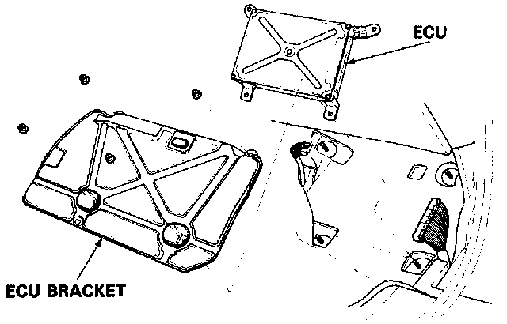
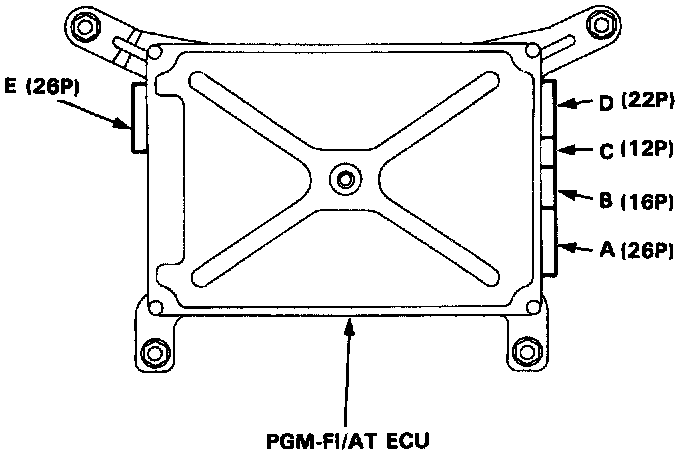
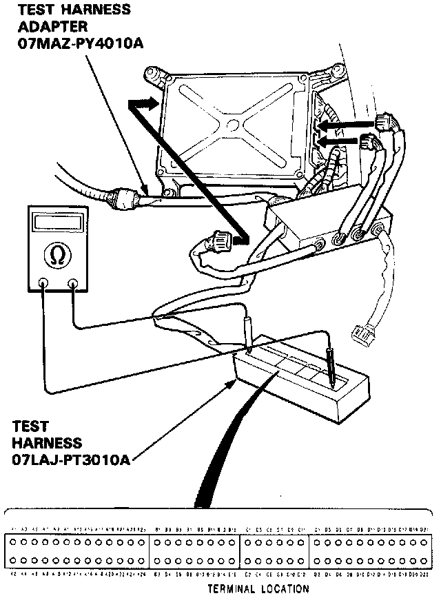

Test Harness Installation
Test Harness UseIf the inspection for a particular failure code requires the use of Test Harness (07LAJ-PT3010A):
1. Remove the right door sill molding and the small cover on the right kick panel, and pull the carpet back to expose the ECU.

2. Remove the ECU bracket.
3. Disconnect the connector from the cooling fan control unit.
4. Connect the Test Harness Adapter to the test harness.

5. Disconnect the appropriate Connector (E:26P, B:16P or C:12P) and connect it to the Test Harness.

NOTE: Modify the Test Harness (07LAJ-PT3010A) connector by removing the bar at both right and left ends with an X-acto knife from the A (26P) male connector block.
NOTE:
- The A section of the Test Harness corresponds to the E (26P) connector, while connecting to test the Test Harness Adapter.
- Unless otherwise noted, use only the Digital Multimeter, KS-AHM-32-003, for testing.